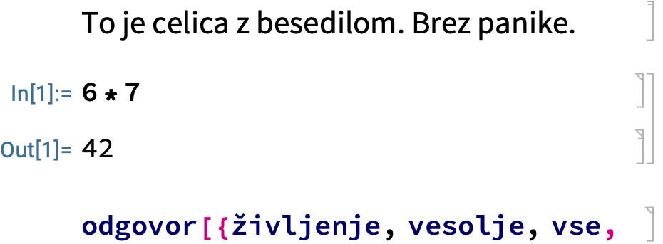
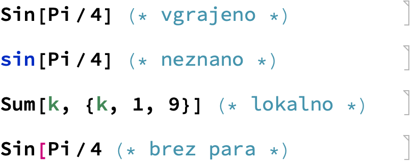
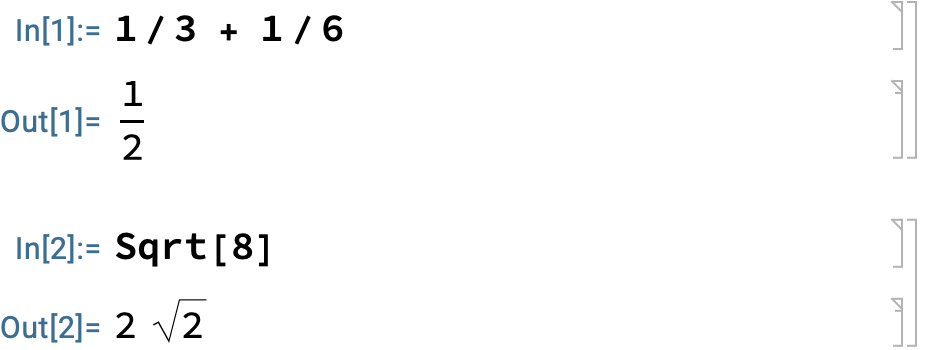
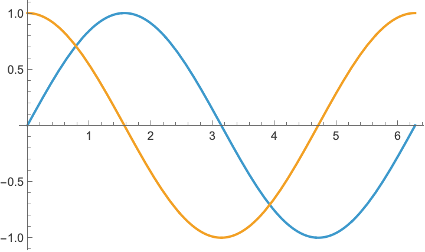
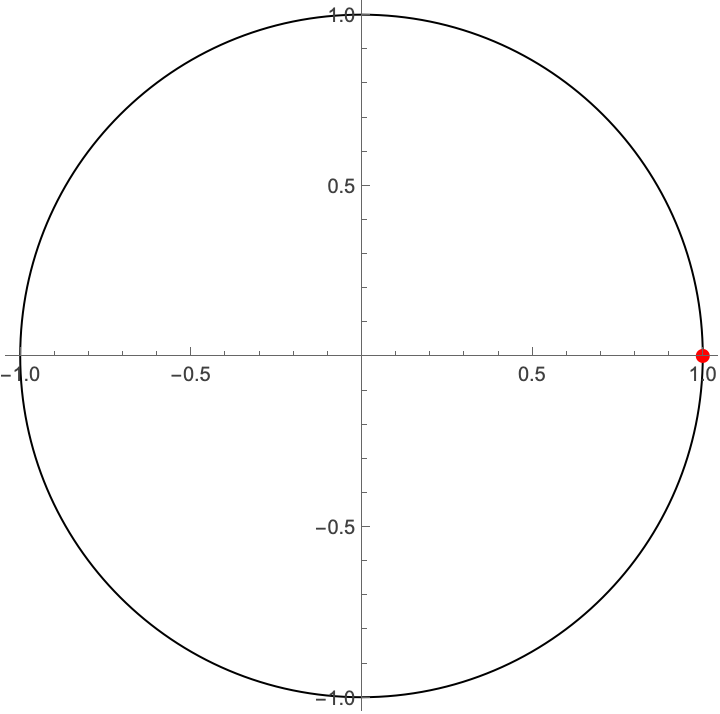

Mathematica 1#
Programska oprema
Mathematica je program za simbolno računanje, kar med drugim pomeni, da poleg običajnega računanja s števili zna integrirati, računati limite, risati grafe in še kaj.
Uporabniški vmesnik#
Z Mathematico delate v oknu zvezka (angl. notebook). Vsak zvezek je sestavljen iz celic, te pa so treh vrst: celice z besedilom (angl. text cell), vhodne celice (angl. input cell) in izhodne celice (angl. output cell). Vse tri kaže slika 14.

Slika 14 Celice v zvezku: besedilo, izveden izraz z rezultatom in nedokončan izraz#
Na vrhu je celica z besedilom, napisana v običajni pisavi.
Pod njo je vhodna celica z izrazom 6*7.
Vhodne celice prepoznate po krepki pisavi, v kateri so vsi znaki enako široki.
Ta celica je že izvedena, zato ima oznako In[1]:=.
Pod njo je izhodna celica z rezultatom 42 in oznako z isto številko, Out[1]=.
Zadnja celica na sliki je vhodna, a še ni izvedena, zato nima oznake. Ker izraz v njej ni dokončan, Mathematica obarva oklepaja, ki nimata para, in vejico, za katero ni ničesar.
Nova celica. Novo vhodno celico dodate tako, da kliknete v prostor pod celico ali med dve celici, kjer se pojavi vodoravna črta, in začnete tipkati. Celica nastane šele, ko napišete prvi znak. Če želite celico z besedilom, kliknite na isto mesto in pred tipkanjem pritisnite Alt+7 (🍎 Cmd+7) ali v meniju izberite Format > Style > Text.
Pozor pri kopiranju izrazov
Izraz, ki ga kopirate iz celice z besedilom ali iz datoteke PDF, se pogosto ne izvede, ker so nekateri znaki v njem samo videti pravi, Mathematica pa jih ne zna prebrati. Tak izraz je zanesljiveje pretipkati.
Izvajanje. Vhodno celico izvedete s tipkama Shift+Enter. Celica dobi oznako s številko, pod njo pa se pokaže izhodna celica z rezultatom, kot na sliki 14. V eno celico lahko napišete več izrazov, vsakega v svojo vrstico; Mathematica izpiše rezultat vsakega posebej. Če vrstico končate s podpičjem, Mathematica njenega rezultata ne izpiše.
Številke v oznakah In in Out sledijo zaporedju izvajanja: celico z oznako In[3] ste izvedli tretjo.
Mathematica si zapomni vse, kar ste izvedli, zato je pomemben vrstni red izvajanja in ne vrstni red celic v zvezku.
Izvajanje prekinete s tipkama Alt+. (🍎 Cmd+.) ali z Evaluation > Abort Evaluation. Če to ne pomaga, ustavite jedro z Evaluation > Quit Kernel > Local.
Izbiranje in brisanje celic. Na desnem robu zvezka ima vsaka celica oglat zaklepaj (angl. cell bracket). Vhodno celico in njen rezultat združuje v skupino še en, zunanji zaklepaj. S klikom na zaklepaj izberete celico, s klikom na zunanji zaklepaj pa celo skupino. Kar ste izbrali, izbrišete s tipko Backspace (🍎 Delete); če izberete skupino, tako izbrišete vhodno celico in njen rezultat hkrati. Z dvojnim klikom na zunanji zaklepaj skupino zaprete ali odprete: zaprta skupina kaže samo vhodno celico.
Posebni znaki in grške črke.
Grške črke in druge posebne znake napišete s kratkim imenom (angl. alias) med dvema pritiskoma tipke Esc: črko alfa na primer kot Esc a Esc.
Po prvem pritisku se v celici pokaže znak ⋮, po drugem pa se zapis spremeni v želeni znak.
Več o tem preberite v dokumentaciji.
Dokumentacija.
Mathematica ima več tisoč vgrajenih funkcij.
Najpogostejše si boste zapomnili, za ostale pa je dovolj, da jih znate poiskati.
Kratek opis funkcije dobite z vprašajem pred njenim imenom, na primer ?Plot.
Celotno dokumentacijo odprete s Help > Wolfram Documentation.
Primeri v njej so celice, ki jih lahko spremenite in izvedete.
Osnovna sintaksa#
Matematične izraze pišete precej podobno kot v LaTeXu: x^2 ostane x^2, \sin x pa postane Sin[x].
Množenje zapišete z zvezdico ali s presledkom: 2 x in a b sta produkta.
Zapis ab brez presledka je en sam simbol z imenom ab.
Oklepaji.
Z okroglimi oklepaji združujete dele izraza, kot v matematiki:
(1 + 2)*3.V oglatih oklepajih naštejete argumente funkcije, ločene z vejicami:
f[x, y, z].V zavitih oklepajih zapišete sezname (
{1, 2, 3}), koordinate točk ({Cos[x], Sin[x]}) in množice ({rdeča, zelena, modra}).
Imena.
Vgrajene funkcije in konstante se začnejo z veliko začetnico: Sin[x] je sinus, sin pa je za Mathematico neznano ime.
Najpogostejše konstante so Pi, E, imaginarna enota I in neskončnost Infinity.
Barve. Mathematica imena v vhodnih celicah barva, zato napako pogosto opazite, še preden celico izvedete (slika 15):
Modra so imena, ki jih Mathematica ne pozna, na primer
sin. Modro ime je torej vaše lastno ali pa tipkarska napaka.Črna so imena, ki jih pozna: ko
sinpopravite vSin, počrni.Zelene so vezane spremenljivke, na primer
kv vsotiSum[1/k^2, {k, 1, Infinity}]. Dokumentacija jim pravi local variables.Vijoličen je oklepaj brez para in vejica, za katero ni ničesar.

Slika 15 Barve v vhodnih celicah#
Za vsakim izrazom na sliki je komentar: besedilo med (* in *), ki ga Mathematica ne izvede.
Računanje#
Mathematico lahko uporabljate kot kalkulator, vendar zna več: računa natančno in tudi z izrazi, v katerih nastopajo simboli. Rezultate poimenujete, vanje vstavljate vrednosti in iz njih sestavljate funkcije.
Natančno in numerično računanje#
Mathematica računa natančno, dokler ne zahtevate drugače.
Slika 16 kaže, kaj dobite, če izvedete celici z izrazoma 1/3 + 1/6 in Sqrt[8].

Slika 16 Natančna rezultata: ulomek in izraz s korenom#
Rezultata sta ulomek in izraz s korenom, ne decimalna približka.
Numerično vrednost izračuna funkcija N, ki ji kot drugi argument lahko podate število mest: N[Pi, 20] vrne 3.1415926535897932385.
Numeričen je tudi rezultat vsakega izraza, v katerem nastopa število z decimalno piko: 1/3. vrne 0.333333.
Odvodi, integrali, vsote in limite#
Vnos |
Rezultat |
|
|---|---|---|
odvod |
|
|
nedoločeni integral |
|
|
določeni integral |
|
|
vsota |
|
|
limita |
|
|
Nedoločenemu integralu Mathematica ne pripiše konstante.
Seznam {x, 0, 1} v določenem integralu pove, da x teče od 0 do 1.
Enak seznam določa meje vsote, {k, 1, 100}, pri risanju grafov pa interval.
Seznami#
Mathematica ne računa le s števili in izrazi, temveč tudi s seznami. Nekatere funkcije seznam vrnejo kot rezultat, druge ga sprejmejo kot argument. Množic Mathematica ne loči od seznamov: množico zapišete kot seznam, funkcije za množice pa vrnejo seznam brez ponovitev, urejen po velikosti.
Vnos |
Rezultat |
|
|---|---|---|
delitelji števila |
|
|
presek |
|
|
unija |
|
|
največji element |
|
|
računanje po elementih |
|
|
Presek iz tabele je seznam skupnih deliteljev števil 12 in 18, njegov največji element pa njun največji skupni delitelj; enak rezultat vrne GCD[12, 18].
Seznami se v tem poglavju pojavijo še večkrat: z njimi zamenjate več simbolov hkrati, narišete več grafov v isto sliko in sestavite sliko iz geometrijskih objektov.
Spremenljivke#
Z enačajem simbolu priredite vrednost, na primer število ali enačbo:
g = 9.81
enacba = x^2 - 5 x + 6 == 0
Odslej Mathematica simbol enacba povsod nadomesti z enačbo 6 - 5 x + x^2 == 0 (člene uredi po svoje).
V drugi vrstici nastopata dva različna enačaja: enojni = priredi vrednost, dvojni == pa primerja levo in desno stran in vrne logično vrednost True ali False.
Ker x nima vrednosti, Mathematica primerjave ne more izračunati in vrne kar enačbo.
Svoja imena pišite z malo začetnico
Vsa vgrajena imena se začnejo z veliko začetnico.
Če svoja imena pišete z malo začetnico, se torej nikoli ne bodo ujemala z vgrajenimi.
Z veliko začetnico pa lahko po nesreči izberete že vgrajeno ime; npr. E = 5 javi napako, ker je E vgrajena konstanta (Eulerjevo število).
Simbol obdrži vrednost, dokler ga ne počistite s funkcijo Clear, na primer Clear[enacba], ali ne ustavite jedra.
Vrednost velja v vseh celicah in tudi v drugih odprtih zvezkih.
Prepisovalna pravila#
Ali je \(x = 2\) rešitev enačbe, lahko preverite na primer s prepisovalnim pravilom (angl. rule):
enacba /. x -> 2
Rezultat je True.
Pravilo x -> 2 pomeni »x zamenjaj z 2«, operator /. pa pravilo uporabi na izrazu, ki stoji pred njim.
Puščico napišete z znakoma - in >, Mathematica pa ju sama združi v →.
Pravilo velja samo za ta izračun: x je po njem še vedno simbol brez vrednosti, enacba pa še vedno enačba.
Zato lahko takoj zatem preverite drugo število: enacba /. x -> 4 vrne False.
Navidez zelo podoben rezultat bi lahko dosegli tudi tako, da bi vrednost x nastavili z enačajem:
x = 2
enacba
Rezultat je spet True, vendar bo x odslej imel vrednost 2 povsod, v vseh celicah, dokler ga ne počistite s Clear[x].
Mathematica bo enacba povsod prebrala kot True, tudi če bi napisali
enacba /. x -> 4 (kljub temu, da \(4\) ni rešitev).
Več simbolov hkrati zamenjate s seznamom pravil. Tako v isto formulo vstavite različne nabore vrednosti:
diskriminanta = b^2 - 4 a c
diskriminanta /. {a -> 1, b -> -3, c -> 2}
diskriminanta /. {a -> 1, b -> 2, c -> 5}
Zadnji dve vrstici vrneta 1 in -16, simboli a, b in c pa ostanejo brez vrednosti.
Pravila ste že srečali v limiti, Limit[Sin[x]/x, x -> 0], in jih boste še pri risanju.
Funkcije#
Kadar boste v isti izraz vrednosti vstavljali večkrat, definirajte funkcijo:
f[x_] := x^2 + 1
Na levi strani definicije za vsako spremenljivko napišete podčrtaj, na desni pa ne.
V tem poglavju je dovolj, da ga vedno napišete za spremenljivke na levi strani :=.
Funkcijo definirajte z operatorjem := in ne z enačajem, sicer se ne bo obnašala po vaših pričakovanjih.
Zdaj f[3] vrne 10, f[t + 1] vrne 1 + (1 + t)^2, f'[x] pa odvod 2 x.
Vrednosti funkcije v več točkah hkrati izračuna funkcija Table: Table[f[x], {x, 0, 3}] vrne seznam {1, 2, 5, 10}.
Seznam {x, 0, 3} pove, da x teče od 0 do 3, enako kot pri vsoti.
Če podčrtaj pozabite, funkcija ne deluje: f[3] ostane f[3].
Risanje#
Mathematica nariše dve vrsti slik: grafe, ki jih izračuna iz predpisa funkcije, in slike, ki jih sami sestavite iz geometrijskih objektov.
Grafi funkcij#
Graf funkcije nariše funkcija Plot:
Plot[x^2, {x, -2, 2}]
Drugi argument, {x, -2, 2}, pove, da x teče od -2 do 2, enako kot pri določenem integralu.
Narišete lahko izraz, funkcijo, ki ste jo definirali, ali več grafov hkrati, če jih naštejete v seznamu:
Plot[f[x], {x, -2, 2}]
Plot[{Sin[x], Cos[x]}, {x, 0, 2 Pi}]
Druga vrstica nariše oba grafa v isto sliko, vsakega v svoji barvi, kot kaže slika 17.

Slika 17 Grafa sinusa in kosinusa v isti sliki#
Videz grafa določite z nastavitvami (angl. options). Nastavitve so pravila, ki jih naštejete za drugim argumentom:
Plot[f[x], {x, -2, 2}, PlotRange -> {0, 3}]
Nastavitev PlotRange določi, kateri del navpične osi je prikazan.
Ostale nastavitve so naštete v dokumentaciji funkcije Plot.
Geometrijski objekti#
Slike, ki niso grafi funkcij, sestavite iz geometrijskih objektov s funkcijo Graphics:
Graphics[{Circle[{0, 0}, 1], Point[{1, 0}], Line[{{-1, 0}, {0, 1}}]}]
Objekte naštejete v seznamu, točko pa podate kot seznam dveh koordinat, na primer {1, 0}:
Circle[{0, 0}, 1]je krožnica s središčem{0, 0}in polmerom1.Point[{1, 0}]je točka.Line[{{-1, 0}, {0, 1}}]je daljica med točkama; z več točkami v seznamu dobite lomljenko.
Barvo objektov in velikost točk določite tako, da ju v seznamu napišete pred objekt, na primer Red ali PointSize[Large]; veljata za vse objekte, ki sledijo.
Koordinatni osi doda nastavitev Axes:
Graphics[{Circle[{0, 0}, 1], Red, PointSize[Large], Point[{1, 0}]}, Axes -> True]
Rezultat kaže slika 18.

Slika 18 Krožnica z rdečo točko in koordinatnima osema#
Druge objekte, na primer Disk, Rectangle in Triangle, najdete v dokumentaciji funkcije Graphics.
Naloge#
Preletite seznam bližnjic na tipkovnici. V njem poiščite bližnjici za prekinitev izvajanja in za celico z besedilom.
Rešite naloge v zvezku.
Zvezek shranite v glavni imenik svojega repozitorija
racunalniski-praktikum, preden odidete iz predavalnice, pa ga zabeležite in vnos pošljite na GitHub.